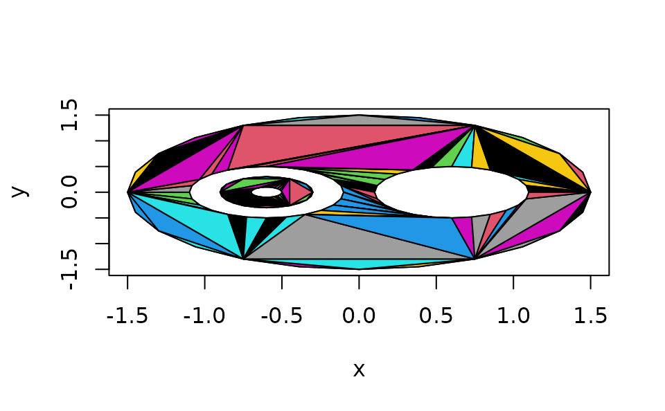

triangulate.RdThis algorithm decomposes a general polygon into simple polygons and uses the “ear-clipping” algorithm to triangulate it. Polygons with holes are supported.
triangulate(x, y = NULL, z = NULL, random = TRUE, plot = FALSE, partial = NA)Coordinates of a two-dimensional polygon in a format supported by xyz.coords.
See Details for how z is handled.
Whether to use a random or deterministic triangulation.
Whether to plot the triangulation; mainly for debugging purposes.
If the triangulation fails, should partial results be returned?
Normally triangulate looks only at the x and y
coordinates. However, if one of those is constant, it is replaced
with the z coordinate if present.
The algorithm works as follows. First, it breaks the polygon into
pieces separated by NA values in x or y.
Each of these pieces should be a simple, non-self-intersecting
polygon, separate from the other pieces.
(Though some minor exceptions to this rule may work, none
are guaranteed). The nesting of these pieces is determined.
The “outer” polygon(s) are then merged with the polygons that they immediately contain, and each of these pieces is triangulated using the ear-clipping algorithm.
Finally, all the triangulated pieces are put together into one result.
A three-by-n array giving the indices of the vertices of each triangle. (No vertices are added; only the original vertices are used in the triangulation.)
The array has an integer vector attribute "nextvert"
with one entry per vertex, giving the index of the next vertex to proceed counter-clockwise around outer polygon boundaries, clockwise around inner boundaries.
See the Wikipedia article “polygon triangulation” for a description of the ear-clipping algorithm.
Not all inputs will succeed, even when a triangulation is
possible. Generally using random = TRUE will find
a successful triangulation if one exists, but it may
occasionally take more than one try.
theta <- seq(0, 2*pi, length.out = 25)[-25]
theta <- c(theta, NA, theta, NA, theta, NA, theta, NA, theta)
r <- c(rep(1.5, 24), NA, rep(0.5, 24), NA, rep(0.5, 24), NA, rep(0.3, 24), NA, rep(0.1, 24))
dx <- c(rep(0, 24), NA, rep(0.6, 24), NA, rep(-0.6, 24), NA, rep(-0.6, 24), NA, rep(-0.6, 24))
x <- r*cos(theta) + dx
y <- r*sin(theta)
plot(x, y, type = "n")
polygon(x, y)
triangulate(x, y, plot = TRUE)

#> [,1] [,2] [,3] [,4] [,5] [,6] [,7] [,8] [,9] [,10] [,11] [,12] [,13] [,14]
#> [1,] 67 66 15 15 15 65 64 63 63 15 20 20 20 20
#> [2,] 66 65 68 69 44 64 63 10 62 20 45 46 47 48
#> [3,] 15 15 67 68 69 15 15 15 10 44 44 45 46 47
#> [,15] [,16] [,17] [,18] [,19] [,20] [,21] [,22] [,23] [,24] [,25] [,26]
#> [1,] 62 61 20 60 59 2 2 58 2 57 2 56
#> [2,] 61 60 2 59 58 49 26 57 27 56 28 55
#> [3,] 10 10 48 10 10 48 49 10 26 10 27 10
#> [,27] [,28] [,29] [,30] [,31] [,32] [,33] [,34] [,35] [,36] [,37] [,38]
#> [1,] 55 44 2 44 43 2 43 42 5 5 41 5
#> [2,] 54 70 29 43 71 5 42 41 30 31 40 32
#> [3,] 10 69 28 70 70 29 71 71 29 30 71 31
#> [,39] [,40] [,41] [,42] [,43] [,44] [,45] [,46] [,47] [,48] [,49] [,50]
#> [1,] 54 40 5 40 54 40 40 15 40 36 53 36
#> [2,] 36 72 33 73 53 74 51 17 52 9 37 35
#> [3,] 10 71 32 72 36 73 74 20 51 10 36 9
#> [,51] [,52] [,53] [,54] [,55] [,56] [,57] [,58] [,59] [,60] [,61] [,62]
#> [1,] 53 5 5 20 40 2 22 53 10 20 2 17
#> [2,] 38 34 7 22 53 4 1 39 13 21 3 19
#> [3,] 37 33 34 2 52 5 2 38 15 22 4 20
#> [,63] [,64] [,65] [,66] [,67] [,68] [,69] [,70] [,71] [,72] [,73] [,74]
#> [1,] 7 5 13 22 10 23 15 11 9 7 40 17
#> [2,] 9 6 14 23 11 24 16 12 35 8 39 18
#> [3,] 34 7 15 1 13 1 17 13 34 9 53 19
#> [,75] [,76] [,77] [,78] [,79] [,80] [,81] [,82] [,83] [,84] [,85] [,86]
#> [1,] 84 84 84 84 106 105 104 84 104 84 103 102
#> [2,] 107 108 109 110 105 104 99 111 103 112 102 101
#> [3,] 106 107 108 109 84 84 84 110 99 111 99 99
#> [,87] [,88] [,89] [,90] [,91] [,92] [,93] [,94] [,95] [,96] [,97] [,98]
#> [1,] 101 124 84 123 92 92 92 122 121 120 99 92
#> [2,] 124 123 92 122 113 114 115 121 120 119 76 116
#> [3,] 99 99 112 99 112 113 114 99 99 99 84 115
#> [,99] [,100] [,101] [,102] [,103] [,104] [,105] [,106] [,107] [,108]
#> [1,] 119 119 94 118 84 76 92 86 86 79
#> [2,] 94 118 98 117 86 79 117 89 87 82
#> [3,] 99 94 99 94 92 84 116 92 89 84
#> [,109] [,110] [,111] [,112] [,113] [,114] [,115] [,116] [,117] [,118]
#> [1,] 92 84 76 94 79 87 89 82 94 76
#> [2,] 93 85 78 97 81 88 90 83 95 77
#> [3,] 117 86 79 98 82 89 92 84 97 78
#> [,119] [,120] [,121] [,122]
#> [1,] 117 90 79 95
#> [2,] 93 91 80 96
#> [3,] 94 92 81 97
#> attr(,"nextvert")
#> [1] 2 3 4 5 6 7 8 9 10 11 12 13 14 15 16 17 18 19
#> [19] 20 21 22 23 24 1 NA 49 26 27 28 29 30 31 32 33 34 35
#> [37] 36 37 38 39 40 41 42 43 44 45 46 47 48 NA 74 51 52 53
#> [55] 54 55 56 57 58 59 60 61 62 63 64 65 66 67 68 69 70 71
#> [73] 72 73 NA 77 78 79 80 81 82 83 84 85 86 87 88 89 90 91
#> [91] 92 93 94 95 96 97 98 99 76 NA 124 101 102 103 104 105 106 107
#> [109] 108 109 110 111 112 113 114 115 116 117 118 119 120 121 122 123
open3d()
polygon3d(x, y, x - y, col = "red")